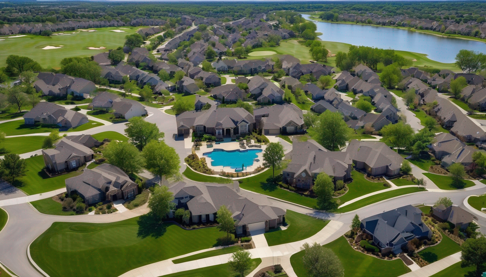
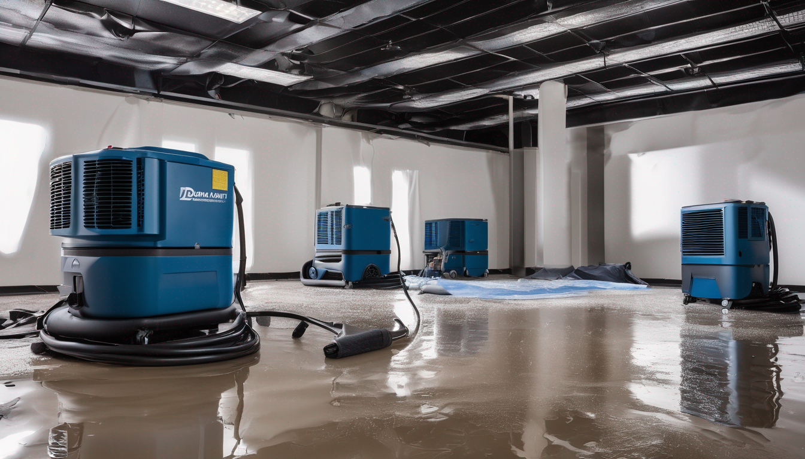

Water in Your Home Is a Clock — Not a Situation to Research
Flash flooding from an Oklahoma supercell. A burst pipe when temperatures drop. An appliance failure — refrigerator ice maker line, water heater, washing machine. These are not situations where you wait and see. Every hour water stays in your South Tulsa home, it works deeper into flooring, walls, and structural materials. Mold begins colonizing wet organic surfaces within 24–48 hours. The cost to fix it grows with every hour you delay.
If water is in your home right now, call (918) 723-2096. We're on-site in South Tulsa within 30–45 minutes. If you're researching after a recent event, here's what you need to know.

What Every Hour of Delay Costs
- Mold: 24–48 hours is all it takes for mold to colonize wet drywall, insulation, and subfloor. Mold remediation adds $2,000–$8,000+ to what was a preventable outcome.
- Structural damage: South Tulsa's newer homes often use OSB subfloor that absorbs water quickly. What looks contained on the surface can mean saturated subfloor across an entire floor plan.
- Insurance complications: Policies require prompt mitigation. Calling fast protects your claim and your coverage.
- Scope expansion: A contained event handled in the first hours is a fundamentally different job than the same event addressed two days later.
From Your Call to Restoration Complete
Call (918) 723-2096 — answered 24/7. On-site in South Tulsa within 30–45 minutes.
Emergency response — standing water extracted, industrial drying equipment deployed, moisture meters map the full extent of saturation including hidden areas in walls and under flooring.
Structural drying — industrial air movers and commercial dehumidifiers run continuously, typically 3–5 days, with daily moisture readings until documented clearance.
Insurance documentation — photos, moisture logs, equipment records. Everything your adjuster needs. We communicate directly with your carrier.
Mold clearance — tested before reconstruction. Every affected cavity verified before new drywall goes up.
Reconstruction — drywall, flooring, insulation, paint. One company, start to finish.

What Water Damage Restoration Costs in South Tulsa
Water extraction and emergency drying: $1,500–$5,000 depending on area affected
Structural drying (walls/floors/framing): $2,500–$6,000
Mold remediation (if mold has developed): $2,000–$8,000+
Full reconstruction: $5,000–$30,000+ depending on scope
Insurance note: Most standard homeowner's policies cover sudden, accidental water damage. Most South Tulsa clients pay only their deductible. We handle the documentation and advocate for full coverage of the legitimate loss.
Frequently Asked Questions — Water Damage in South Tulsa
Does South Tulsa experience flash flooding?
Yes. South Tulsa's rapid suburban development has created extensive impervious surface that contributes to flash flooding during intense rain events. Neighborhoods near creek corridors and low-lying areas in the 71st Street to 101st Street corridor can experience rapid water intrusion during Oklahoma's storm season.
How fast can you respond to water damage in South Tulsa?
We respond to South Tulsa properties within 30 to 45 minutes — South Tulsa is one of our fastest-response areas given our Tulsa base. We dispatch immediately on every call, 24 hours a day.
What water damage risks are common in South Tulsa's newer homes?
South Tulsa's newer construction often uses engineered wood subfloor (OSB) that absorbs water quickly and is difficult to dry without professional structural drying equipment. Newer homes also have more appliances and plumbing connections — dishwashers, ice makers, water heaters, irrigation systems — each a potential failure point.
Serving South Tulsa and Surrounding Areas — Any Time, Any Day
We respond to water damage across South Tulsa, Jenks, Bixby, and the surrounding communities. Mold starts in 24–48 hours. The window to limit damage is now.
📞 Call (918) 723-2096